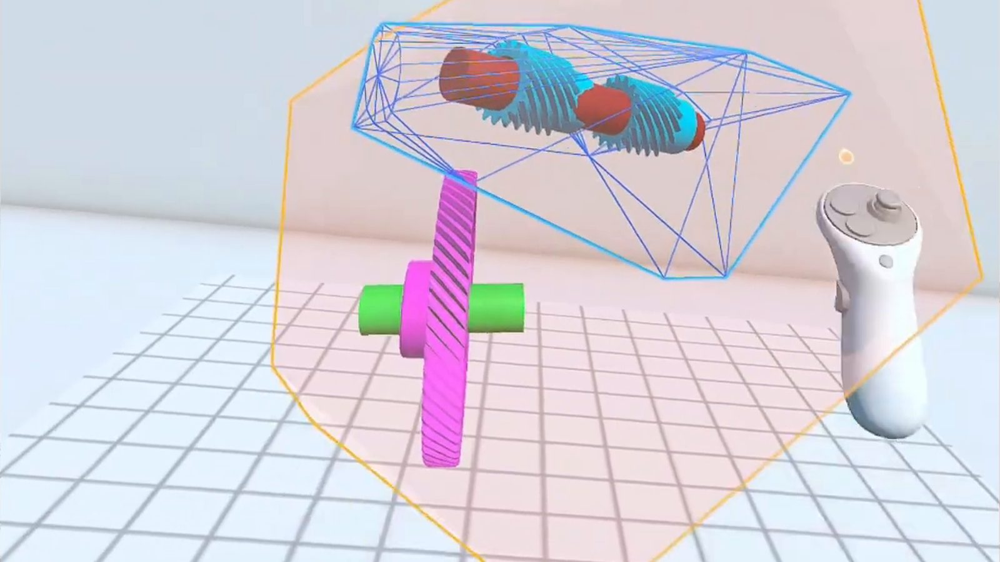
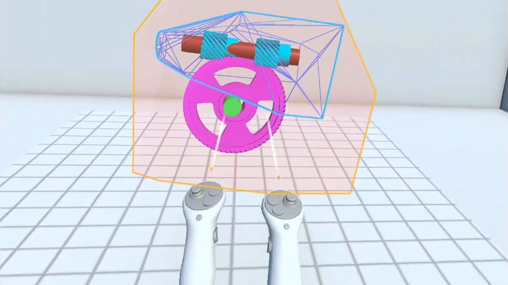

Bimanual XR Specification of Relative and Absolute Assembly Hierarchies for Teleoperation
IEEE Conference on Virtual Reality and 3D User Interfaces Abstracts and Workshops (VRW), 2026. Poster.

Abstract
We present a bimanual XR interaction approach for specifying remote assembly tasks as hierarchies of relative and absolute object constraints that specify high-level teleoperation goals for robots. Grabbing one object in each hand creates a constraint group (visualized as a hull) and groups can be nested into hierarchies. Each group can be relative (with a robot-specifiable 6DoF pose) or absolute (with an author-specified fixed 6DoF pose) in relation to its parent. A relative group specifies a subassembly that can be constructed at a location chosen by the robot software for efficiency rather than mandated by the user.
Video

Cite
B. Yang, X. He, C. Zou, J.-S. Liu, B. Tversky, and S. Feiner, “Bimanual XR Specification of Relative and Absolute Assembly Hierarchies for Teleoperation,” in Proc. IEEE Conference on Virtual Reality and 3D User Interfaces Abstracts and Workshops (VRW), 2026, pp. 1033–1034, doi: 10.1109/VRW70859.2026.00191.
@inproceedings{yang2026bimanual,
title={Bimanual XR Specification of Relative and Absolute Assembly Hierarchies for Teleoperation},
author={Yang, Ben and He, Xichen and Zou, Charlie and Liu, Jen-Shuo and Tversky, Barbara and Feiner, Steven},
booktitle={2026 IEEE Conference on Virtual Reality and 3D User Interfaces Abstracts and Workshops (VRW)},
pages={1033--1034},
year={2026},
doi={10.1109/VRW70859.2026.00191}
}